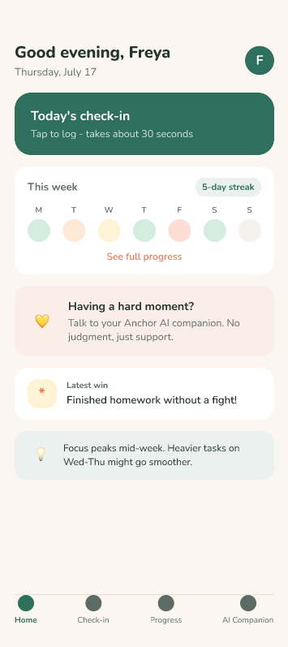
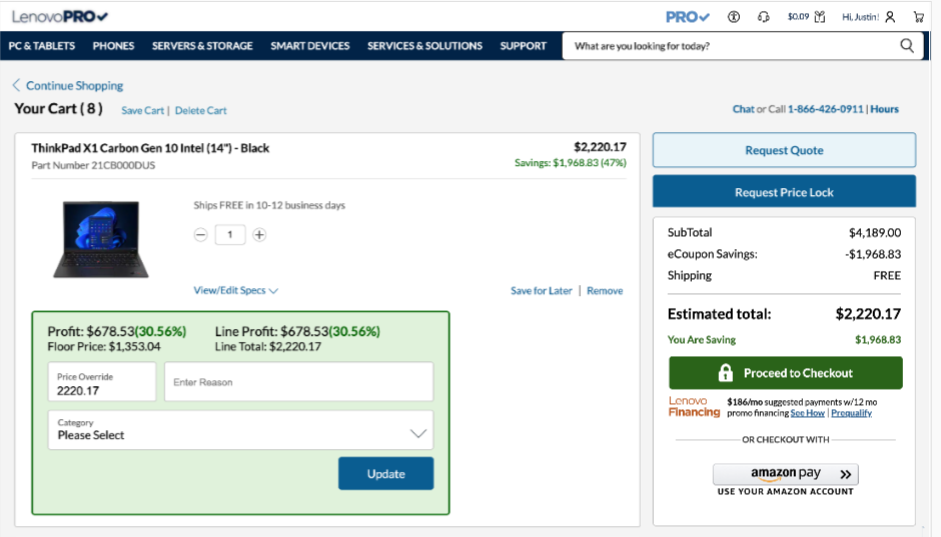
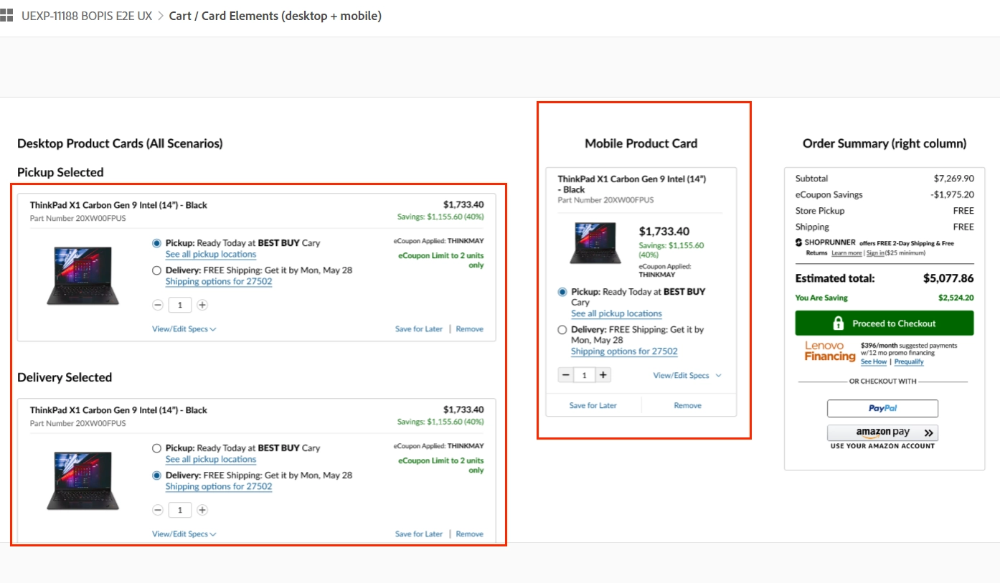

AI-POWERED ADHD APP FOR PARENTS
Capstone Project @BrainStation , 2026
I'm a product-minded professional transitioning from engineering into product management,
backed by hands-on Senior Product Owner experience at Lenovo and a Master's in Management Analytics grounding my decisions in data.

Capstone Project @BrainStation , 2026
Marketing Analytics Project @Smith School of Business , 2025

@Lenovo as a Senior Product Owner, 2023

@Lenovo as a Senior Product Owner, 2023

@Lenovo as a Senior Product Owner , 2023
Shipping a feature isn't the goal; solving the problem is. I measure success by the impact a decision creates, not just the work completed.
I ground product decisions in evidence — user research, metrics, market signals — rather than opinion, and I'm honest about what the data can't yet tell me.
I'd rather surface a gap or ask an uncomfortable question early than let ambiguity ship downstream. Precision in requirements saves rework later.
Every roadmap decision traces back to a real person's problem. I keep the user in view through prioritization, not just at the discovery stage.
Good products get built at the intersection of engineering, design, and business. I see stakeholder alignment as part of the job, not a distraction from it.
I treat ambiguity and new domains as things to learn from, not obstacles — the same instinct that took me from engineering to product ownership.
Start from the problem, not the solution — talk to users, study data and market signals before jumping to features.
Turn discovery into a clear point of view: who the user is, what they need, and what success looks like.
Use structured frameworks (MoSCoW, RICE, Kano) to separate essential from nice-to-have, and be explicit about trade-offs.
Translate strategy into PRDs, user stories, and acceptance criteria detailed enough to cover edge cases.
Stay closely partnered with engineering, design, and QA — answering questions fast and validating early.
Define how success will be measured — OKRs, KPIs, or output metrics — before launch, not after.
Shipping isn't the finish line. Feed post-launch data back into the next round of discovery.
📧 Email: yumeiliu2017@outlook.com
💼 LinkedIn: www.linkedin.com/in/yumei-liu-51323b9a